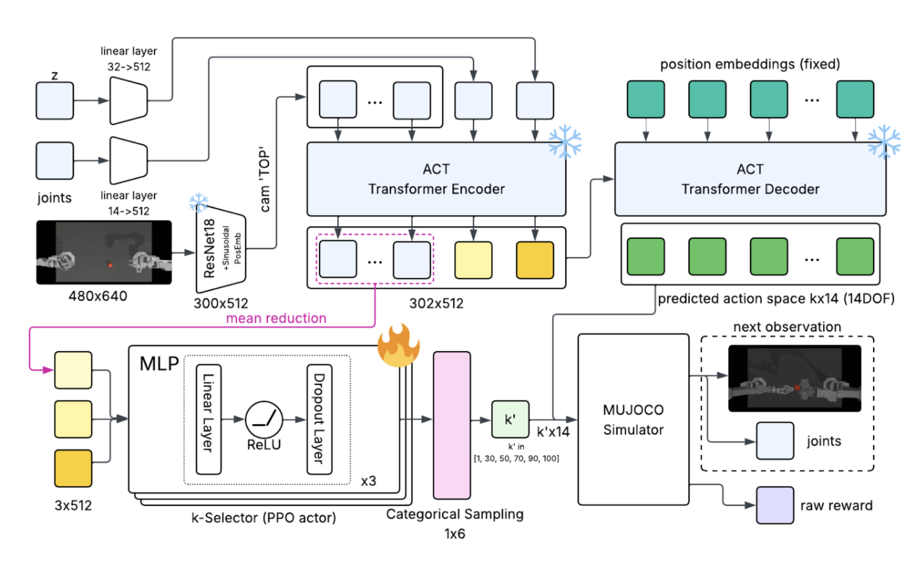

← Back to home
Adaptive Action Chunk Selection for Robot Manipulation
CS224R: Deep Reinforcement Learning | 03/2025 – 06/2025
report
/
poster

Overview
This project extends Action Chunking with Transformers (ACT) by introducing an
adaptive action-horizon selector that dynamically adjusts the chunk length during
execution, balancing reactivity and motion smoothness in contact-rich manipulation tasks.
Motivation
-
Standard ACT uses a fixed action chunk length, forcing a trade-off between
responsiveness (small k) and smoothness (large k).
-
Real manipulation tasks exhibit non-uniform temporal structure, with phases
requiring different control granularity.
-
A single fixed k treats all states as equally predictable, limiting robustness in dynamic or
contact-heavy scenarios.
Approach
-
Trained an online PPO-based k′ selector that chooses the action chunk length
at each decision point based on the current state.
-
Designed a reward structure combining task success, episode progress, computational efficiency,
exploration, and effective k-selection.
-
Integrated the selector with a pre-trained ACT policy to enable adaptive temporal abstraction
without retraining the full policy.
Evaluation
-
Evaluated on simulated manipulation tasks including cube transfer and
bimanual insertion.
-
Observed that the policy consistently selects smaller chunk sizes during
fine-grained, coordinated interaction phases.
-
Achieved improved success rates on challenging tasks where fixed-k ACT struggled, particularly
in contact-rich insertion scenarios.
Key Takeaways
-
Adaptive action chunking improves robustness by increasing observation frequency when precision
is critical.
-
Variable temporal abstraction better matches the structure of real manipulation tasks than a
fixed-horizon policy.
-
Separating what action to take from how long to commit to it provides a flexible
extension to existing transformer-based control policies.
← Back to home